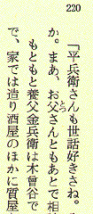
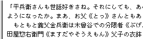
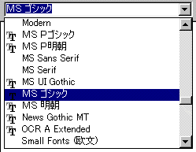
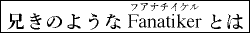
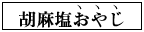
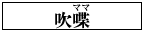

●１冊の本はさまざまな要素から成り立っています。本文だけを見ても、例えば文章にはルビ（ふりがな）や注釈があります。表組みもみられます。写真や挿し絵が使われている本も多数あります。
●青空文庫では、本文はテキストで入力します。
●写真や挿し絵などは、画像ファイルとして扱います。かつては青空文庫の作業対象外としていましたが、作品を伝える上であった方が望ましく、写真撮影者や画家の著作権が切れていると確認できる場合は、公開ファイルにおさめます。
●さて、入力にかかる前に１つだけ注意していただきたいことがあります。青空文庫は原則として、「底本のできるだけ忠実な再現」を目標に置き、「勝手な編集はしない」という点です。
●漢字の使い方や送りがなは、「底本どおり」とします。旧かなのテキストであれば旧かなのままに、時代によって変化の激しい送りがなも、底本にならって入力してください。
●漢字で書くか、かなを用いるか、どんな漢字をあてるか、あるいは、かな表記の細部がばらついていたとしても、原則的には、底本通りに入力してください。
●ただし旧漢字、旧かなのテキストが、私たちの多くにとって読みにくいこともまた事実です。現代表記にあらためたものがあれば、それを底本とすることで読みやすくできます。けれど、すべての作品で書き換え版が用意されているわけではありません。
●そこで、旧字、旧かなの書きあらために関しては、作業を進める上での目安を定めた上で、例外的にこれを認めることとします。自分自身で書き換えを行おうと考える人は、「旧字、旧仮名で書かれた作品を、現代表記にあらためる際の作業指針」にそって、対処してください。
●テキストによるレイアウトの表現には限界がありますが、字下げなどの組みに関する情報は、適宜、入力者注で表します。入力者注の書き方は、「注記一覧」にまとめています。
■入力方法
●テキスト作成に使うアプリケーションは、どんなものでもかまいません。シンプルなエディタでも、ワープロでも、あるいはアウトラインプロセッサなどの特殊なエディタでも、ご自分が使い慣れたものをお使いください。
●保存形式は、青空文庫が使うと決めている、「Shift_JISのテキスト、改行コードはCR+LF」に合わせてください。（→文書の保存）。
●入力中は、できるだけこまめに保存してください。パソコンにはエラーがつきものです。また、停電などのトラブルもあります。適度な頻度でファイルを保存し、入力済みのデータが不意の事故で失われないようにすることが大切です。
【OCRの活用】
●書籍のページなどをスキャナーで読み込み、読み込まれた画像データを解析して文字データに変換し、テキストとして保存するしくみを、OCR（Optical Character Reader）といいます。OCRの活用は、負担の大きい入力作業の負担軽減につながります。
●ただし、100％の精度で変換できるOCRソフトはありません。ソフト自体が優秀でも、スキャニングに用いる書籍やコピーの質の問題もあります。OCRによるテキスト入力は必ずエディタなどによる修正作業をともないます。
●入力ファイルは、次のように作っていきます。
１）一番最初の行には、「作品名」を入れる。（底本の表題にルビが付いていたとしても、１行目に入れる作品名には、ルビは入れません。表題のルビを省いたときは、「青空文庫収録ファイルへの記載事項」に従って、ファイル末にその旨を記載してください。）
２）その次の行に「著者名」を入れる。
３）訳者、編者などが関わっていたり、副題、原題等がある場合等は、「青空文庫収録ファイルへの記載事項」の形式に沿って３行目以降に入れる。（副題のルビも、入力しません。副題のルビを省いたときは、「青空文庫収録ファイルへの記載事項」に従って、ファイル末にその旨を記載してください。）
４）冒頭の記載事項を書き終えたら、１行開けて、ルビなどを表す記号の使い方を説明した、【テキスト中に現れる記号について】を入れる。（記号を使わないですむ場合は、入れる必要はありません。）
５）１行開けて、本文を入れる。（【テキスト中に現れる記号について】が入らない場合は、冒頭の記載事項から１行開けて、本文を入れてください。）
６）本文の末尾から３行開けて、「使用した底本の正式名称・出版社・発行年月日、入力者名」等を「青空文庫収録ファイルへの記載事項」の形式に沿って入れる。
７）現代表記に書き改めた場合の作業履歴、その他の注記事項などがある場合は、「青空文庫収録ファイルへの記載事項」の形式に沿って入れる。
●文庫本などではそれ自体に底本（全集など）が存在する場合があります。その場合には、「底本の親本（底本の底本）の正式名称・出版社・発行年月日」もわかる範囲でつけ加えてください。
●入力ファイルの基本的な形を掴む上では、新規公開作品のテキスト版をいくつか開いてみると、参考になります。
●テキスト（→文書の保存）では、レイアウトに関する形式まで含めて底本をそのまま再現することはできません。そのために生ずる補足事項については、下記のような「入力者注」を活用します。
 【入力者注の形式】
【入力者注の形式】
●「［＃…］」を基本形とし、「［＃３字下げ］」、「青空［＃「青空」に傍点］」のように表現します。
●レイアウトやルビ等を、入力者注でどう表現するかは、「注記一覧」にまとめています。
●底本の何ページ、何行目にあるかを示す必要がある場合は、「数（ページ）-数（行）」の形式で書き込みます。数字と「-」は、英文モードで入力できる、半角のものを使ってください。行数を数える際には、行アキはカウントしないでください。右の例では、赤矢印の行は「3」と数えます。
■入力の実際
●入力にあたっては、以下のようなルールを守ってください。
（１）使う文字
【パソコンで使える文字】
●一般にパソコンでは、JIS X 0201で定義された、ラテン文字、数字、カタカナ、記号と、JIS X 0208で定義された漢字、かな、ラテン文字、ギリシア文字、キリール文字、数字、記号が使えます。
JIS X 0201の文字はすべて、JIS X 0208に組み込まれています。
共通する部分がダブってしまっているわけですが、JIS X 0201のものが「半角」で表示されるのに対し、JIS X 0208の文字は「全角」で表示されるという形で、使い分けられています。
さらに、各社のパソコンでは、OSメーカー、パソコンメーカーが独自に拡張した、いわゆる「機種依存文字」が使えます。
加えて、JIS X 0213で定義されたものを含む、Unicodeの文字が使えるようになっています。
【青空文庫で使う文字】
●青空文庫の入力では、JIS X 0201の「半角カタカナ」と、各パソコンに組み込まれた「機種依存文字」は使いません。JIS X 0213を含む、Unicodeの文字も用いません。
●「半角カタカナ」をのぞくJIS X 0201の文字（いわゆる半角英数と半角の記号）とJIS X 0208のすべての文字を使って、入力を進めていきます。
【包摂規準】
●入力を始めると、底本の漢字の字体と、画面やプリントアウトのものの細部が微妙に違っていて、「このコードで入れて良いのか？」と迷うことがあります。（→微妙な字体差と包摂規準、）
●青空文庫の入力で使えるJIS X 0208は、第1水準第2水準の漢字を規定した上に、細かな字体差によって漢字のコードを区別するかしないかの約束事を、「包摂規準」という名前で定めています。
●第1水準第2水準に追加して使う、第3水準第4水準の漢字などを定めたJIS X 0213も、JIS X 0208のものに追加、修正する形で、包摂規準を定めています。
●青空文庫の漢字の入力は、JIS X 0208に明示された185番までの包摂規準に加え、JIS X 0213で追加された186〜199番を受け入れた上で、底本に忠実に行います。（→JIS X 0208と0213規格票の包摂関連項目）
●JIS X 0208の第1水準第2水準にない漢字は、外字として注記します。（→入力時に使える文字）
（２）レイアウト関連
【行頭の字下げ】
●ほとんどの書籍では、新しい段落の始まりの部分が１文字下げてあります。これはワープロなどでは、ふつう、「インデント設定」を用い、ルーラーや数値で指定します。しかし、青空文庫の入力ではインデントは使わずに、段落の最初に全角のスペースを入れてください。
●かな漢字変換ソフトによっては、和文モードでもスペースが半角になるよう、設定できるものがあります。和文モードのスペースが半角になっていたら、マニュアルやインターネットの記述を参考にして、設定を全角にあらためてください。
【行頭の括弧の字下げ】
 ●一部の書籍では、新しい段落の始まりに括弧（「「」、「（」など）がくる場合、半字、１字、あるいは１字半分と、下げてあることがあります。（右の例では、１字下げてあります。）こうした場合にも、下のように、スペースは入れずに入力してください。

【字下げ】
●テキストでは、字下げは形どおりに再現できません。底本に字下げした組みがあるときは、入力者注で表します。
●字下げがはじまる１行前に、下の例のように［＃ここから○字下げ］と入れ、行をあらためて、底本の文章を入力してください。「○字下げ」の「○」の所は、全角のアラビア数字で入力してください。
すでに何字分下げるかは注記してあるのですから、あらためて字下げされた字数分、全角スペースを入れる必要はありません。
●字下げが終わったら、下のように改行して［＃ここで字下げ終わり］と入れてください。
●字下げ箇所の前後で行が開けてあれば、下のように、入力テキスト中にも、空白の行を入れてください。

●字下げには、さまざまなパターンがあります。それらの書き方は、「注記一覧」の「字下げ」を参照してください。
【改行】
●底本（印刷物）は、それぞれ、固有の行の長さを基準にレイアウトが固定されています。入力の際には、「底本に合わせて、１行１行の行末に改行（リターン）を入れる」ことは行わないでください。「改行は段落から段落への移り目だけに入れる」が原則です。
【ページや段をあらためる処理】
●内容の切れ目で、ページや段をあらためる処理のうち、段をあらためるものを「改段」、続きを次のページから始めるものを「改ページ」、次の左ページから始めるものを「改丁」と呼びます。
これらはそれぞれ、次のように入力します。
［＃改段］
［＃改ページ］
［＃改丁］
詳しくは、「注記一覧」の「ページや段をあらためる処理」を参照してください。
【ページの左右中央に組んである処理】
●章名や献辞、数行の一節が、ページの左右中央に組んであるものは、次のように入力します。
［＃ページの左右中央］
千恵子と明に
［＃改ページ］
詳しくは、「注記一覧」の「ページの左右中央に組んである処理」を参照してください。
【見出し】
●見出しには、「大見出し」、「中見出し」、「小見出し」の三つのレベルを設けて、次のように注記します。
［＃２字下げ］先生［＃「先生」中見出し］
●作品中に一つのレベルだけが使われている場合は、中見出しとします。二つのレベルが使われている場合は、大見出しと中見出しとします。三つのレベルが使われている場合は、大見出しと中見出し、小見出しとします。
詳しくは、「注記一覧」の「見出し」を参照してください。
●テキスト版の見出し注記をもとに、XHTML版の冒頭に目次を表示します。テキスト版を開く青空文庫ファイル表示ソフトにも、見出し注記から目次をまとめるものがあります。
【表組み】
●テキストで表組みを正確に再現することはできません。簡単な表組みの場合には、項目と項目とのあいだをスペースで調整して入力してください。
●表の枠や区切りには、けい線素片を用いてください。
●複雑な表組みは、図版として扱います。どの形式でどう組み込むか、reception@aozora.gr.jpに相談してください。
【罫囲み】
●行中の文字が罫囲みされている場合は、次のように入力してください。
そしてキ劇の［＃「キ劇の」は罫囲み］犠牲になるようなことは
●ブロックで罫囲みしてある場合は、次のように入力してください。
［＃ここから罫囲み］
「工場委員会」の選挙制協議のため時間後一人残らず食堂へ集合の事。危機は迫っている。団結の力を以って我等を守ろう。
［＃ここで罫囲み終わり］
詳しくは、「注記一覧」の「罫囲み」を参照してください。
【縦中横】
●縦組み中で、例えば「B29」のアラビア数字や「（一）」のような括弧付き数字等が、そこだけ横に組まれていることがあります。
●「縦中横」と呼ばれるこうした組みは、次のように入力してください。
Ｂ29［＃「29」は縦中横］
（一）［＃「（一）」は縦中横］
詳しくは、「注記一覧」の「縦組み中で横に並んだ文字」を参照してください。
【割り注】
●本文の途中に、小さな文字の２行組みで挟み込まれる柱を、割り注と呼びます。
割り注は、次のように入力してください。
［＃割り注］価は四百円であった。［＃割り注終わり］
詳しくは、「注記一覧」の「割り注」を参照してください。
【字詰め】
●他の箇所よりも字詰めが短く設定してあるところは、次のように入力してください。
［＃ここから１０字詰め］
昭和十五年五月二十九日京都義方会に於ける講演速記で同年八月若干追補した。
［＃ここで字詰め終わり］
●字詰めが設定してある箇所は、しばしば字下げされています。字詰めと字下げの組み合わせなどの詳細は、「注記一覧」の「字詰め」を参照してください。
【横組み】
●横組みの底本から入力した際は、ファイル末に「※底本は横組みです。」と書いてください。
●縦組みのなかで、行中の文字の一部が横組みされてい際は、次のように入力してください。
スハフ［＃「スハフ」は横組み］
縦組みの中で、ブロックで横組みしてあるときは、次のように入力してください。
［＃ここから横組み］
手持現金旧券＋（新円100円×家族人数）＋500円以内の給料＋300円＋（100×Ｘ）
［＃ここで横組み終わり］
詳しくは、「注記一覧」の「横組み」を参照してください。
（３）外国語
【アルファベット】
●JIS X 0208にある文字を使って行う青空文庫の入力では、ラテン文字、ギリシア文字、（ロシア語などの表記に使われる）
キリール文字の三種類のアルファベットが使えます。
●このうちラテン文字については、一般のパソコンでは、半角のものと全角のものを使い分けられます。
青空文庫の入力でも、半角、全角双方のラテン文字を使います。
●アルファベットの語句は、原則として、英文モードで半角のラテン文字を使い、
僕は Victor Hugo の Notre Dame を読んだとき、
のように入力してください。
●半角ラテン文字の語間は、上のように、半角開けてください。
●ギリシア文字、キリール文字は、和文モードの全角でしか入力できません。全角の文字を用いて、
そこには ΚΑΜΑΤΟΣ ΕΥΚΑΜΑΤΟΣ とあった。
のように入力してください。
●ギリシア文字、キリール文字の語間は、上のように、全角開けてください。
●かな、漢字、記号（句読点と括弧をのぞく）とアルファベットの境は、
外道哲学と Sokrates 前の希臘哲学
説話には一々 moral が附く。
そこには ΚΑΜΑΤΟΣ ΕΥΚΑΜΑΤΟΣ とあった。
のように、半角開けてください。
●アルファベット文字列に組み込まれた、ピリオドやコンマ、中点、コロン、セミコロン、疑問符、感嘆符などの各種記号は、アルファベットととして扱います。
半角のものがあれば、半角で入力し、かな、漢字、記号（句読点と括弧をのぞく）と接するときは、
Il nevivra pas ! と云った。
青空文庫の玄関口は http://www.aozora.gr.jp/ です。
のように、半角開けてください。
●句読点とアルファベットの境には、
西洋にいた時から、Archive とか
のように、アキを入れないでください。
●日本語が入る括弧とアルファベットの境には、
そこには ΚΑΜΑΤΟΣ ΕΥΚΑΜΑΤΟΣ（苦は苦にならぬ）とあった。
のように、アキを入れないでください。
●括弧の中にアルファベットが入る場合、アルファベットの前後には、
“Kosinski soll leben !”
バヴァリア（Bavaria, Bayern）は、
苦は苦にならぬ（ΚΑΜΑΤΟΣ ΕΥΚΑΜΑΤΟΣ）
のように、アキを入れないでください。
アルファベットの入る括弧には、全角のものを使ってください。括弧の前後には、アキを入れないでください。
●縦組みの底本中で、縦に組まれているアルファベットは、和文モードで、全角のものを用いて入力してください。
●全角で入力した、アルファベットの略号や縦アルファベットが、かな、漢字、記号と接するところには、
ＡＴ＆Ｔ、ＮＴＴはともに、
ａ、ｂ、ｃと黒板に
のように、アキを入れないでください。
【アクセント符号付きのラテン文字】
●アクサン（´）（｀）や、ウムラウト（¨）などの付いたラテン文字は、青空文庫で使える文字の範囲にはありません。
●これらは、「青空文庫テキストへの「アクセント分解」の適用」で概要を説明している、「アクセント分解」を用いて入力します。
●この方式で、アクセント符号付きのラテン文字をどう表現するかは、アクセント付き文字の変換表にまとめられています。
●「raffiné」という単語の「é」は、変換表によれば「e'」と書くとわかります。「raffiné」という単語であれば、アクセント分解で用いる記号「〔〕」で挟んで、次のように入力します。
〔raffine'〕
詳しくは、「注記一覧」の「アクセント符号付きのラテン・アルファベット」を参照してください。
（４）数字と記号
【数字】
●１文字のアラビア数字（算用数字）は全角で、２文字以上の場合は半角で（10キーを使って）入力してください。
●半角数字中の「,」は、半角で入力してください。
●底本の表記が「一九九八年」のような漢数字の場合は、そのまま漢数字で入力してください。
【記号】
●「（」、「）」、「「」、「」」などの括弧記号、「，」、「．」、「・」、「？」、「！」などの記述記号は、原則として、和文モードで入力してください。ただし、アルファベットとアラビア数字の、半角文字列中で用いられる場合には、英文モードで半角のものを入力してください。
●かな漢字変換ソフトの設定によっては、句読点などが自動的に半角や「．」「，」に変換されてしまうことがあります。和文モードでこうなっていたら、マニュアルやインターネットの記述を参考にして、設定をあらためてください。
【ハイフンとダッシュ】
●半角のアルファベット、数字文字列中で使われているハイフンには、半角の「-」を使ってください。
●ハイフンを少し長くした形のダッシュは、ダッシュ記号「―」を使用してください。（キーボードから直接入力できるのは、線が少し短いマイナス記号（−）です。混同しないよう注意してください。）
●印刷物でよく使われる２倍の長さ（全角２文字分）のダッシュは、上記のダッシュ記号を２つ続け、「――」と入力してください。実線についても同様です。
●ダッシュが二重になった形の記号には、等号「＝」を使用してください。
【点線】
●底本が「……」のようになっている場合は、３点リーダー「…」を使用してください。
●底本が「‥‥」のようになっている場合は、２点リーダー「‥」を使用してください。
●底本が「・・」のようになっている場合は、中点（中黒）「・」を使用してください。
【全角と半角】
●プロポーショナルフォント（文字の形によって、表示される文字の幅が変化するフォント）をお使いの場合、入力中の画面では、数字などの全角と半角との区別がつきにくいことがあります。
●「画面では半角に見えているようなのに、全角になっていた」、あるいはその逆のケースが多発する場合は、お使いのワープロやエディタの「フォント設定」を、「等幅フォント」に変えてみると良いかもしれません。「等幅フォント」では、全角と半角の文字幅は、常に2対1で表示されます。
●Windowsでは、「ＭＳ Ｐゴシック」「ＭＳ Ｐ明朝」など、フォント名に「Ｐ」がつくものがプロポーショナルフォント、「ＭＳ ゴシック」「ＭＳ 明朝」など、「Ｐ」がつかないものが等幅フォントです。既定値の設定では、「ＭＳ Ｐゴシック」となっているソフトがほとんどです。

●Mac OS Xの等幅フォントには、「OSAKAレギュラー-等幅」があります。
（５）特殊な表記
【ルビ】
◆ルビ処理の基本
●ルビは、ルビの付く文字列のあとに、「《》」でくくって入力します。（学術記号の「≪≫」と混同しやすいので注意してください。）
●印刷物では通常、「がつこう」、「きようしつ」のように、ルビの拗促音が小書きされません。けれど青空文庫のファイルでは、原則として「学校《がっこう》」、「教室《きょうしつ》」などと、ルビの拗促音を小書きしてください。
ただし、拗促音を小書きしない旧かな作品では、ルビにも小書きを用いないでください。
作品本文が旧かなであるにもかかわらず、ルビは新仮名とした底本があります。この際は、ルビの拗促音は小書きしてください。（旧かな作品中の新仮名ルビの拗促音を小書きしたたときは、「青空文庫収録ファイルへの記載事項」に従って、ファイル末にその旨を記載してください。）
●ルビ付きの熟語が連続する場合には、
一応《いちおう》何時《いつ》もの
のようにルビを分割します。
ただし、複合語として定着している場合は、
一瀉千里《いっしゃせんり》
のように１つにまとめます。
分けるべきか、まとめるべきか迷ったときは、まとめてください。
●ルビの付く文字列がはじまる前には、「｜」を入れます。
書き込まれた「｜」は、「《》」におさめられたルビを、プログラムを使って底本にある形に再現しようとする際などに、処理の手がかりとして利用できます。
底本に次のようにあれば、

武州｜青梅《おうめ》の宿
と入力してください。
◆「｜」を省く場合
●ルビのかかる文字列の区切りにかならず「｜」が入っていると、自動処理には便利でも、テキストを読む人にはわずらわしいでしょう。
そこで、「｜」なしでもルビのかかる範囲を特定できる場合には、「｜」を省きます。
●ルビのかかる部分が漢字だけで構成され、かな、記号、空白など、「漢字以外の文字」に続いている場合には、「漢字」と「漢字以外」という文字種の違いを手がかりに、ルビのかかる範囲を特定できます。

は、ルビのかかる「火照」がかなに続いていますから、「｜」を省いて、
耳まで火照《ほて》って
と入力します。
●ルビは多くの場合、ひらがなや句読点などに続く漢字文字列に付いています。そのためファイル中では、ほとんど、
夢と現《うつつ》との閾《しきい》はない
帆をたて直し、艪《ろ》を押して
などと、「｜」なしで入力することになります。
●繰り返し記号「々」は、漢字として扱います。

とあれば、
「｜」を省いて、
すると稍々《やや》度を失った
と入力します。
●「々」と同様、JIS X 0208では第1水準第2水準に含められていない、「仝」（おなじ、ドウ、くりかえし）、「〆」（しめ）、「〇」（ぜろ、レイ）、「ヶ」（コ、カ、ガ）も、「｜」がいるかいらないかの判断にあたっては、漢字とみなしてください。
●外字注記で表現する「 」（二の字点、面区点番号1-2-22）も、「々」と同様に漢字として扱い、
」（二の字点、面区点番号1-2-22）も、「々」と同様に漢字として扱い、
確実さで、益※［＃二の字点、面区点番号1-2-22］《ますます》はっきりと
のように、「｜」なしで入力してください。
●アルファベットの単語は、【アルファベット】の項にあるように、原則として前後に半角のアキを入れて入力します。
アルファベットの単語にルビが付いている場合は、空白や文字種の違いによって、ルビのかかる範囲を特定できます。

とあれば、「Fanatiker」の前後を半角開けますから、「｜」を省いて、
兄きのような Fanatiker《ファナチイケル》 とは
と入力します。
この際、単語のあとにくる半角アキは、「《」の前ではなく、「》」のあとに置きます。
●アルファベットの句や文にルビが付く場合は、単語ごとにルビを付けます。
とあれば、
“Kosinski《コジンスキイ》 soll《ゾル》 leben《レエベン》 !”
と入力します。
◆「｜」を省かない場合
●「｜」なしでは、ルビのかかる範囲の特定ができない次のような場合には、「｜」を用います。
●冒頭の例のように、漢字文字列の途中からルビが付く場合には、文字種の違いを手がかりにできません。
そこで、「｜」を用いてルビのかかる範囲を特定し、
武州｜青梅《おうめ》の宿
と入力します。
●ルビの付く文字列に、漢字とかななど、異なった文字種が混在している場合にも、文字種の違いを手がかりにできません。

とあれば、「｜」を用いて、
そんな｜お伽話《フェヤリー・ストーリース》は、
と入力します。

とあれば、
霧の｜ロンドン警視庁《スコットランドヤード》…
と入力します。

の「ヱ」は、カタカナです。「｜」を用いて、
いいか｜釜右ヱ門《かまえもん》。
と入力します。
●複数のアルファベットの単語に、一つのまとまったルビが付く場合には、「｜」を用いてルビのかかる範囲を特定してください。

とあれば、「彼は」に続く半角アキのあとに「｜」を入れて、
彼は ｜Au revoir《さらば》 と、
と入力します。
アルファベット入力時に入れる半角アキは、上の例では「彼は」と「｜」のあいだと、「》」 と「と」のあいだに置きます。
詳しくは、「注記一覧」の「ルビとルビのように付く文字」を参照してください。
ルビの付く文字の分け方とまとめ方に付いては、「入力ファイルを「テキスト版」に仕上げるために」の「テキスト版に求められる形式４ 本文」を参照してください。
◆ルビ処理の応用
ルビ処理のルールを確立し、これを遵守していけば、プログラムによるルビ付けの自動処理や、洗練された音声読み上げが可能になります。
「青空文庫のXHTML, TEXTの読み方」にあるように、すでに青空文庫形式のルビ記号に対応したソフトが、いくつも開発されています。
【傍点】
●強調のために語句のわきに打つ点を、傍点といいます。傍点は、入力者注で処理してください。例えば、底本が

となっている場合には、
胡麻塩おやじ［＃「おやじ」に傍点］
と入力します。
●傍点には「 」だけでなく、「
」だけでなく、「 」、「●」、「○」、「▲」、「△」、「◎」、「」などが使われることもあります。
」、「●」、「○」、「▲」、「△」、「◎」、「」などが使われることもあります。
「」が使われている場合は、「傍点」の代わりに「白ゴマ傍点」と入力してください。「●」は「丸傍点」、「○」は「白丸傍点」、「▲」は「黒三角傍点」、「△」は「白三角傍点」、「◎」は「二重丸傍点」、「」は「蛇の目傍点」と書いてください。
傍点の書き方の詳細は、「注記一覧」の「傍点」を参照してください。
【傍線】
●強調のために語句の脇に添えられた線を、傍線といいます。傍線は、「注記一覧」の「傍線」に従って注記してください。
【ゴシックとイタリック】
●明朝体の本文の中で、強調のために、文章の一部にゴシックやイタリックが使われることがあります。
●見出しがゴシックで組んであるといった、編集による処理と思われるものは、注記する必要はありません。一方、著者の表現意図に基づくと思われるものは、「注記一覧」の「太字（ゴシック）と斜体（イタリック）」に従って注記してください。
【文字サイズ】
●文字の大きさに、変化がつけてあることがあります。
●見出しのサイズが本文とは変えてあるといった、編集による処理と思われるものは、注記する必要はありません。一方、著者の表現意図に基づくと思われるものは、「注記一覧」の「文字サイズ）」に従って注記してください。
【ママ】
●作品中に「ママ」というルビがふってある文字がときどきあります。

これは形はルビであっても意味はルビではなく、「親本（原稿）の誤植（誤字）と思われるがそのまま（ママ）にする」という注釈です。これについては、ルビではなく入力者注を用い、
吹喋［＃「喋」に「ママ」の注記］
のように入力してください。
ルビのように「ママ」と付く注記の詳細は、「注記一覧」の「訂正と「ママ」」を参照してください。
【踊り字】
●「人々」の「々」のように同じ文字の繰り返しを表す文字を、踊り字といいます。 踊り字には、右の例のように２倍の長さ（全角２文字分）の「くの字点」もあります。くの字点は、青空文庫で使える文字には含まれていません。代わりに「／＼」と入力してください。
踊り字には、右の例のように２倍の長さ（全角２文字分）の「くの字点」もあります。くの字点は、青空文庫で使える文字には含まれていません。代わりに「／＼」と入力してください。
●くの字点には濁点付きのものがあります。この場合は、間に「″」を入れて「／″＼」と入力します。
●印刷物では、「々」「ゝ」などが行頭にくる場合には、「人々→人人」のように、踊り字を一字目の漢字に置き換えるのが普通です。この処理が行われたと判断できるときは、二つ目の漢字を踊り字に戻し、「人々」といった形で入力してください。２倍の踊り字が、置き換えられたと思われる場合にも、踊り字に戻してください。
【訓点】
●漢文の字間や行の脇に小書きで添えられる、返り点などの符号や送り仮名を、訓点といいます。訓点は、入力者注を略した記号を添えて、次のように入力してください。
●返り点は、［＃…］におさめて入力します。
自［＃二］女王國［＃一］東度［＃レ］海千餘里。
レ点には、カタカナの「レ」を用いてください。
●漢字の右下に、小書きのカタカナで添えられる訓点送り仮名は、［＃（…）］におさめて入力します。
阪［＃（ノ）］上［＃（ノ）］郎女
小書きの漢字（万葉仮名）が、訓点送り仮名として使われている場合も、同じ形で入力します。
爾時倭姫命見悦給［＃（弖）］、其處［＃（爾）］魚見社定賜［＃（支）］
訓点の書き方は、「注記一覧」の「訓点」を参照してください。
【上付き文字、下付き文字】
●数式や元素記号などで使われる行の上部や下部に小さく入る文字は、入力者注で処理してください。例えば、「２の２乗」を表す数式は、
22［＃「２」は上付き小文字］
と入力します。また、水の元素記号は、
H2［＃「２」は下付き小文字］O
と入力します。
詳しくは、「注記一覧」の「行右小書き、行左小書き文字（縦組み）」と「上付き小文字、下付き小文字（横組み）」を参照してください。
【伏せ字】
●国家による検閲が盛んに行われた時代に発行された書籍では、問題があるとされた箇所を「×」などで置き換えた、伏せ字が使われている場合があります。伏せ字は、底本で使われている記号を、使われている個数分入力してください。
（６）画像
●作品の内容を伝える上で必要であり、著作権に関する問題のない写真や図版は、原則として、公開ファイルにおさめます。（かつては、「画像は公開ファイルにおさめない」としていました。）
【図版の著作権】
●挿絵の著作権の保護期間は、作者（画家）の死後50年で切れると考えて、収録の可否を判断してください。
●無署名で掲載されている図版や挿絵の保護期間は、公表後50年と考えてください。
●写真は、保護期間に関する著作権法の規定が繰り返し変更されたため、発行時期に即して、収録の可否を個別に検討する必要があります。
ただし、発行後10年間だけ保護するとしていた旧著作権法の規定が関わって、1956（昭和31）年12月31日までに発行されたものは、すべて権利が消滅しています。これに該当するものは、写真家の没年や、存命か否かにかかわらず、収録が可能です。
●画像ファイルを点検グループ（reception@aozora.gr.jp）に送る際は、「収録できる」と判断した根拠を、書き添えてください。
●収録可能か否か判断に迷ったら、点検グループに相談してください。
【画像ファイル】
●著作権の問題のない、写真、挿絵、図版はスキャナーで読み取ってください。ご自身でスキャナーが利用できなければ、点検グループに相談してください。
●白黒の図版は、グレースケールで。カラーの図版は、カラーで作成してください。
ファイル形式は、次のようにしてください。
画像形式：png
解像度：72ppi
色深度：カラー256色、グレースケース16色をめどに、画質の明らかな劣化を招かない範囲で、浅くしてください。
ファイル名は、次のようにつけてください。
fig作品ID_通し番号.png
「作品ID」は、1バイトの数字で表記します。
各作品のIDは、総合インデックスで確認できます。
「通し番号」は、1バイト数字2ケタの「01」から始まる連番として次のようにします。
fig2441_01.png
画像ファイル数が100をこえて、通し番号が「99」以上必要になる際は、「001」から始まる1バイト数字3ケタの連番としてください。
fig2441_001.png
【画像注記】
画像の入るところには、テキストに次のように注記してください。
［＃石鏃二つの図（fig42154_01.png、横321×縦123）入る］
注記の基本形の中に、画像の説明、丸括弧して、画像ファイル名とサイズをおさめます。
詳しくは、「注記一覧」の「画像」を参照してください。
■どう処理すべきか迷ったとき
●世に出ている書籍の数は膨大、しかも内容は多岐にわたります。入力途中でどう処理していいか迷う場面が、きっと出てくるはずです。また、底本の文字が欠けていて判読できないなどといったトラブルもありえます。処理に困ったときは、原則として「入力者注」で処理してください。（→入力者注の形式）
【誤植・誤記・脱字】
●本にはしばしば誤植があります。著者の誤記と思われる表現にもぶつかります。明らかに誤植、誤記、脱字だと判断できる文字は、入力者注で処理してください。迷う場合には、原文通りに入力してください。
●例えば、「宮沢憲治」のように明らかな誤植と思われる場合は、
宮沢賢治［＃「賢治」は底本では「憲治」］
のように、正しい文字に置き換えた上で、入力者注を付けてください。
●書き換えの記録を残さずに本文を変更することは、行わないでください。
●誤植と断定することはできないけれど、表記が疑わしい場合、もしくは、明らかに誤りではあるけれど、正しい内容が特定できない場合には、
彼は12381［＃「12381」はママ］年に生まれ、
のように、「ママ」を用いて注記してください。
底本の表記に疑いをもった際の対処の詳細は、「注記一覧」の「訂正と「ママ」」にまとめてあります。
【判読不能などの場合】
●文字が判読できないなどの場合は、その文字のかわりに「※」を入れ、
※［＃判読不可、30-16］
のように入力者注で処理してください。
◆「入力_2」へ｜◆作業マニュアル目次へ